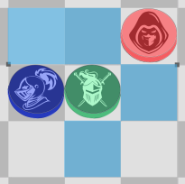
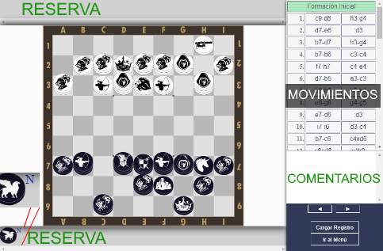

Gungi
Manual de uso
Este manual no tiene por objetivo explicar las Reglas del Gungi ni indagar en estrategias. Es una guía con el propósito de enseñarle al jugador cómo desarrollar una partida de Gungi en este programa y guiarlo en el entendimiento de cada uno de los elementos.
Inicio
Una vez que se abre el programa la primera pantalla es el menú principal. En esta ventana se puede crear una Nueva Partida, Cargar una Partida guardada en formato ".pg", abrir el Reproductor de Registros y abrir este manual.Nueva Partida
Empiece una Nueva Partida pulsando el botón. Debería ver una ventana igual a esta.En la figura:
1. Cambia a los Ejércitos de Lado
2. Indica que ejército juega primero
3. Indica si dicho ejército es jugado por una persona o por la CPU
4. Indica si se juega con captura con coronación o no.
Una vez que elija la configuración adecuada pulse Comenzar y debería ver esta pantalla:
Como se inicia en la etapa de Formación Inicial solo se muestra la parte del tablero correspondiente al ejército de turno y las piezas de su reserva.
Este cartel ubicado en el margen izquierdo indica a qué ejército le pertenece el Turno, cambiando de diseño entre Negro y Blanco.
Para colocar una pieza en el territorio debe cliquear sobre ella y posteriormente cliquear sobre una casilla. Si el movimiento no es legal aparecerá un cartel advirtiendo de eso. Si una pieza sobre el tablero no le convence cliqueé sobre ella y volverá a la reserva.
Si está interesado en saber cómo están compuestas las torres apriete el botón secundario sobre una de ellas.
Los Peones muestran una letra de color indicando cuál es la pieza en la otra cara.
Cuando termine de colocar todas las piezas en el tablero aparecerá este botón, si lo pulsa da por terminado su turno.
Batalla
Una vez que usted y su adversario hayan colocado todas la piezas de su Reserva en el tablero, aparece este cartel inidicando el comienzo de la Batalla.
Ahora va a tener la oportunidad de realizar una acción en su turno.
Reserva
En la esquina inferior izquierda o en la superior derecha está el botón de la Reserva. Cuando pulse este botón se va a abrir la caja correspondiente a su ejército, mostrando todas las piezas que tenga en la Reserva.Cuando quiera renovar tiene que abrir la Reserva y seleccionar alguna de las piezas. Una vez que lo haga, la pieza elegida va a aparecer en su mano y deberá cliquear sobre una casilla disponible para colocarla en el tablero.
Al levantar una pieza de la Reserva, se puede apreciar cómo algunas casillas en el tablero se tornan grises, esto indica que no se puede colocar la pieza en dicha casilla, cumpliendo con las reglas del juego.
Acciones
Para realizar las acciones primero va a tener que seleccionar una pieza de su ejército en el Tablero haciendo clic en ella y aparecerán las acciones disponibles.
- La pieza verde es la actualmente seleccionada, la que realiza la acción.
- Las casillas vacías celestes son para realizar un movimiento normal.
- Las piezas rojas son aquellas a las cuales se pueden capturar.
- Las piezas azules son las piezas aliadas a las cuales se puede hacer un salto encima.
Algunas piezas que selecciones van a mostrar una serie de Acciones de Casilla. Las mismas se muestran como botones sobre las casillas involucradas. Al hacer clic sobre alguno de ellos se realizará la acción correspondiente.
Estas posibles acciones son:
Cambia la selección de la pieza actual a esa pieza.
Salto encima.
Captura en movimiento.
Permutación.
Sacrificio.
Sustitución.
Captura en torre. Indica el nivel de la torre que se puede capturar.
Si en la torre de la pieza seleccionada aparece el botón de cambio significa que la base es una pieza con Montura. Una vez que pulse el botón cambiará la selección y aparecerán en morado aquellas casillas disponibles para moverse.
Información
Sobre el panel izquierdo alrededor del cartel de Turno se muestra información relativa al juego. Al pasar el cursor sobre los iconos deberías ver un cartel diciendo qué significa.Indica que tu Rey está en Jaque. En tu turno vas a tener que protegerlo o vas a perder.
Los efectos aparecen en verde e indican los efectos que el anterior ejército activó.
Hubo una pieza Recuperada.
Se capturó un Grifo y se debe Reubicar la Fortaleza o el Cañón.
Se capturó una pieza con el Mayor y se debe Reclutar.
Indica que un Bufón activó el efecto de Traición y las piezas por debajo se voltearon.
Si se juego con Captura con Corona, indica que un Rey coronó la Fortaleza enemiga con una pieza alida.
Recuperacion Forzada
Si al mover o capturar una pieza se activa la Recuperación Forzada, dicha pieza aparece en la reserva o en la del enemigo (siguiendo las reglas) con un fondo de color, como se muestra en la imagen, diferenciando entre Recuperada (el caso del Asesino) o Recuperada Enemiga (el caso del Grifo). Estas piezas no se pueden renovar hasta que pase el turno necesario.Reubicación Forzada
Al capturar un Grifo enemigo, se activa el efecto de Reubicación Forzada. La Fortaleza o el Cañón aparece en la mano y como ocurre en la Renovación va a tener que seleccionar una casilla donde ubicarlo.Reclutamiento Forzado
Similar a la Reubicación Forzada, cuando capture una pieza con el Capitán la pieza aparece en la mano y va a tener que seleccionar una casilla donde ubicarla.Captura con Coronación
Cuando realice una Captura con Coronación con el Rey se abrirá la reserva para elegir una pieza a Coronar, en caso de no tener ninguna simplemente se voltea la pieza. Si usted prefiere voltear la pieza sin realizar reemplazo, entonces pulse el botón Sin Reemplazo.Ascenso
Durante la batalla algunas casillas tienen un marco de color, esta indica las casillas que están bajo efecto de Ascenso. Es posible ocultar o mostrar su visualización con el botónVictoria
Una vez que se gana una partida aparece la ventana de Victoria.Indica el ejército que ganó y si ganó por Jaque Mate o por Doble Bufón. Cualquier otra falta no es considerada el fin del juego, ya que el mismo programa evita que las hagas.
También se muestra el registro de la partida, el cual se puede guardar o reproducir.
Formato de Partida
Las partidas se guardan con el formato ".pg" (Partida Gungi), y sobre el mismo formato son leídas. Evite modificar el archivo ya que podría causar errores de lectura.Reproductor de Registro
Si desde el Menú Principal cliquea en Reproducir Registro se va a abrir una ventana solicitando una archivo de registro. Puede ser de cualquier tipo de archivo, pero deberá tener el formato de acuerdo al PGuN. En caso de error al procesarlo, se le informará de ello.Una vez cargado el archivo se abre la ventana.

Sobre las secciones por encima y por debajo del tablero, están las Reservas de los ejércitos de cada lado.
Si una pieza tiene una letra por encima, como el Grifo en la imagen, indica cuál es la pieza en su otra cara. Si una pieza tiene un fondo de color, como mientras se juega un partida, dicha pieza está recuperada.
Sobre el panel derecho se listan todos los movimientos que hubo en la partida cargada. Si selecciona alguno, actualiza el tablero al momento en que se realizó ese movimiento.
Si en el registro el reproductor encontró un comentario de la forma: ";comentario;" coloca un borde de color sobre el movimiento comentado.
Debajo de la lista de movimientos está la caja de comentarios. Cuando seleccione un movimiento comentado, el texto aparece en este sector. Con las flechas en las opciones usted puede avanzar o retroceder respectivamente por los movimientos, o análogamente pulsando las flechas izquierda o derecha del teclado.
Si le interesa cómo está conformada una torre en el tablero, puede cliquearla.